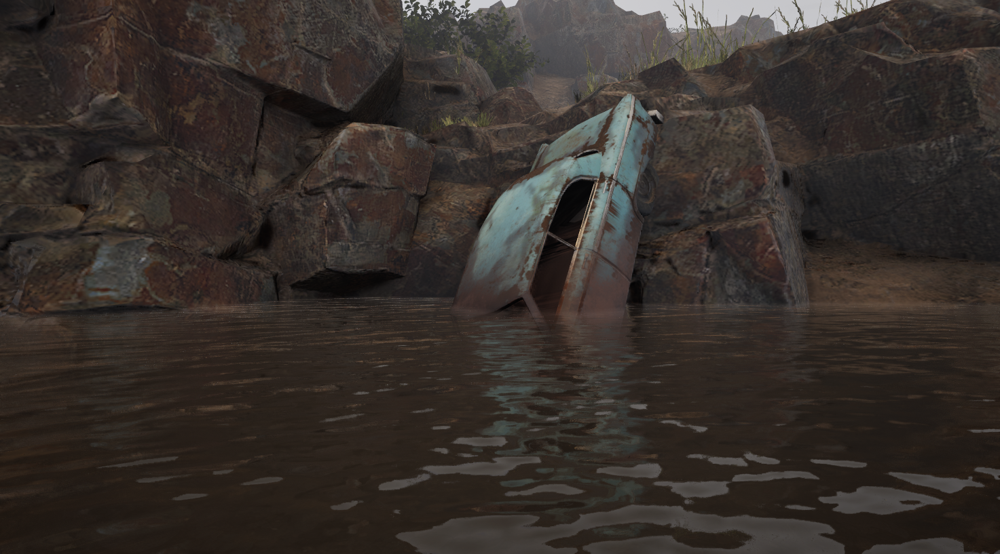
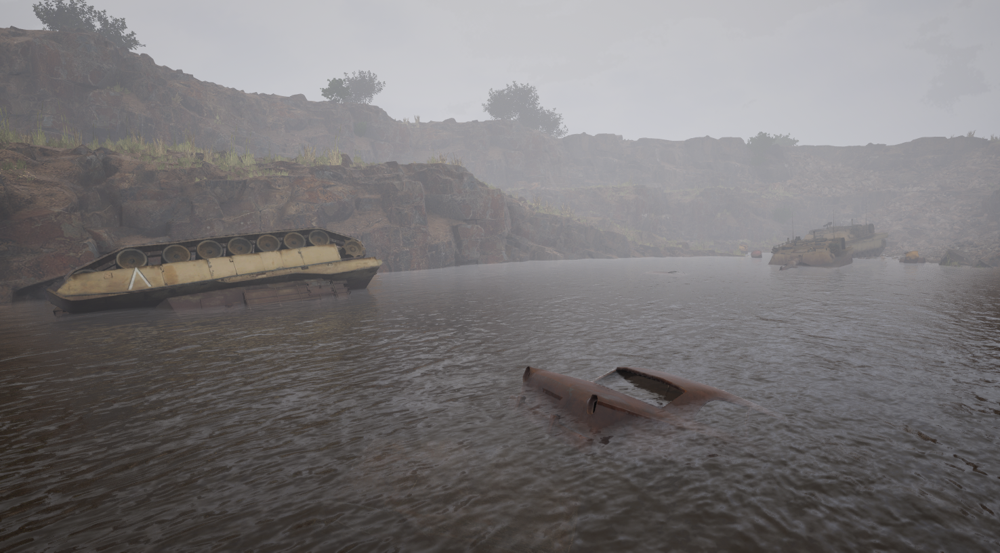
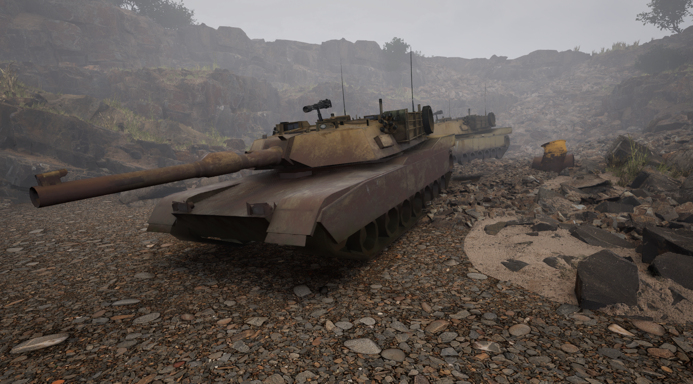
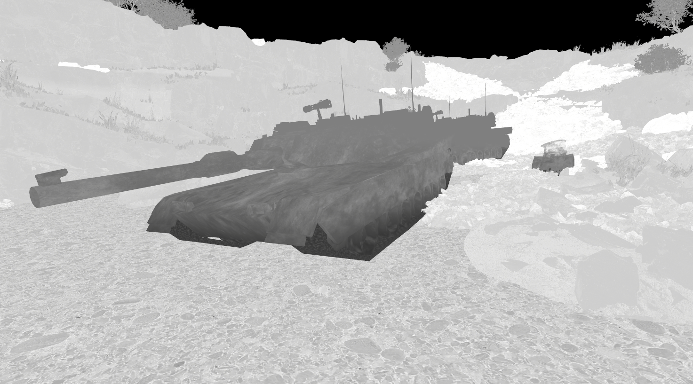

Environment Art
Procedural Rust
Project Overview
This project showcases the creation of realistic procedural rust materials using Unreal Engine and Substance Designer. The materials dynamically respond to surface depth, allowing rust and moss to accumulate naturally in crevices and low-lying areas.
Tank mesh — rust accumulation in lit scene

Car mesh — full rust and moss blend

Hero shot — both meshes in scene
Technical Approach
This project uses signed distance field techniques which allow for a dynamic rust and moss layer height based on the depth of the surface.
- Blueprint system to manage and update SDF values for material parameters
- Material Function for reusable shader logic shared across all meshes
- Separate material layers for Base, Rust, and Moss — blended by SDF depth
- Material Instances per mesh for per-object tuning

Shared material function — SDF depth blending logic

Base material layer

Rust layer material

Moss layer material
Artistic Approach

Tank — dry state, no water SDF influence

Roughness channel — rust vs. clean metal contrast

Layer blending — transition between rust and base
Key Learnings
This project taught me valuable lessons about environmental storytelling through weathering and decay. The challenge of making military hardware look convincingly abandoned while maintaining visual interest pushed my skills in both artistic direction and technical execution.